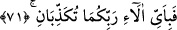
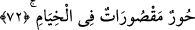

tam ve kâmil mânâda güzel ahlak sâhibidirler. Bu kadınlar hurîlerdendir, denildiği gibi,
yüzü ve huyu güzel kadınlardandır da denilmiştir. Ancak âyet-i kerîmenin son kısmı
hûrîlerin kasdedildiğini göstermektedir.
Hadis-i şerifte de: “Cennet ehli olan kadınlardan biri yere ve göklere bakacak olsa
oralarını olduğu gibi aydınlatır ve yerle gök arasını güzel koku ile doldururdu. Onun
başının tâcı dünya ve üzerindekilerden daha değerlidir” buyrulmuştur.[185]
Yine rivâyet edildiğine göre; “Şâyet bu hûrîlerden birinin ağız suyu denize dokunsa
tatlılığından o denizin tuzlu suyu tatlanırdı.”[186]
Yine rivâyet edildiğine göre; O kadınlar, “biz yumuşak ve güzelleriz ki, somurtup
üzmeyiz” derler. “Biz razı ve memnunlarız ki, kimseye kızmayız, biz sahiblerimiz için
ebedîyiz, yok olup gitmeyiz. Bize sahib olana ve bizim sâhip olduklarımıza ne
mutlu.”[187]
Bir eserde şu hususlar zikredilmiştir: Cennet hûrîleri bu sözleri söyleyip kendilerini
övdüklerinde, dünya kadınlarından mümineler onlara cevap verirler: “Biz namaz
kılardık, siz kılmadınız; biz oruç tutar, sadaka verirdik, siz oruç tutmadınız, sadaka
vermediniz,” diyerek onlara üstün gelirler. Allah onları üstün kılar.
Bu âyet-i kerîme, bu iki cennetten önceki iki cennetin üstün olduğunu açıklamaktadır.
Çünkü, önceki iki cennetteki hûrîleri vasfederken, “Sanki onlar yâkût ve
mercandırlar” (er-Rahmân, 55/58) buyurduğu halde, sonraki iki cennet hakkında
“İçlerinde huyu ve yüzü güzel kadınlar var” (er-Rahmân, 55/70) buyurdu. Çünkü her
güzel, yakut ve mercan gibi güzel olmaz.
et-Te’vilâtü’n-Necmiyye’de denilmiştir ki; âlî mükâşefelerden ve faziletli
muâmelerden dolayı, “İçlerinde huyu güzel, yüzü güzel kadınlar vardır” şeklindeki
vasıflandırma, kullukta Allah’a yakın olanların cenneti, amel defterleri sağ elinden
verilen iyilerin cennetinden üstün olduğunu gösterir. Çünkü bu cennetin semeresi, ahlakı
güzelleştirmektir. Diğer cennetin semeresi ise Fenâ fillah ve bakâ billah sırrına
ermektir.
71. Öyleyken Rabbinizin hangi nimetlerini yalanlayabilirsiniz?
Kadınlardan
duyduğunuz
şeylerle,
size
bulunduğu
ihsanlardan
hangisini
yalanlayabilirsiniz?